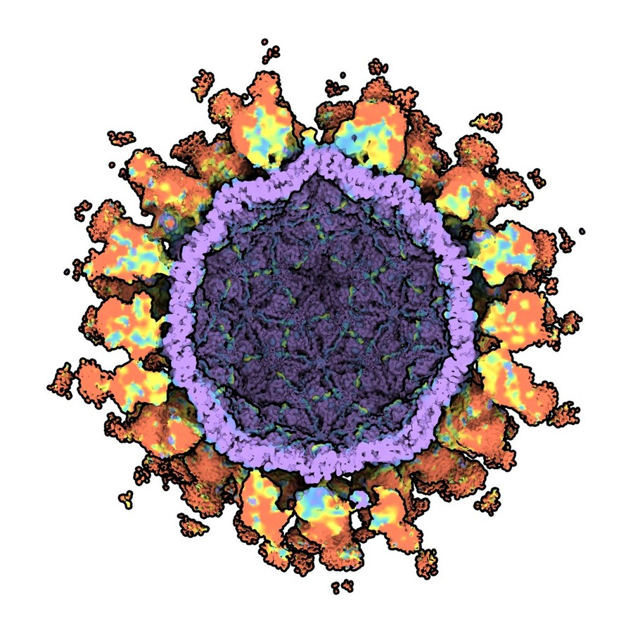
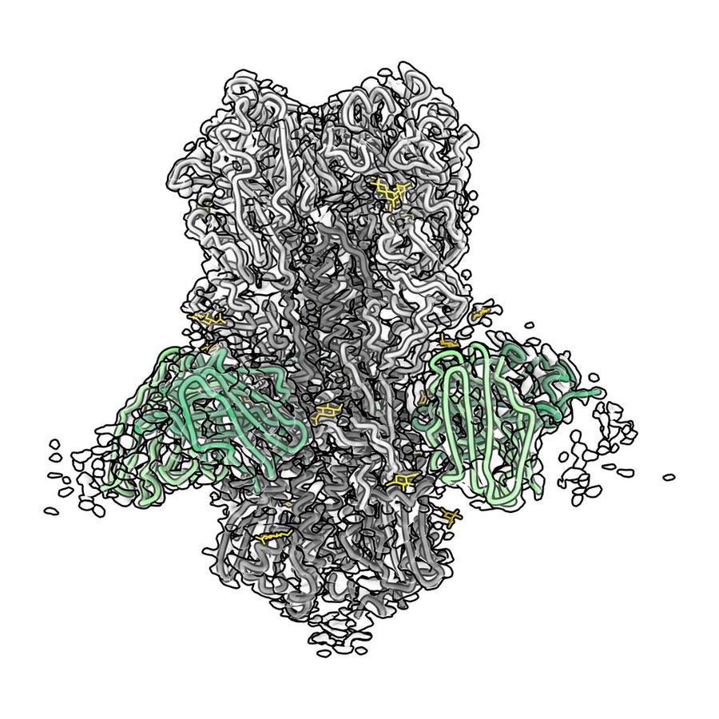
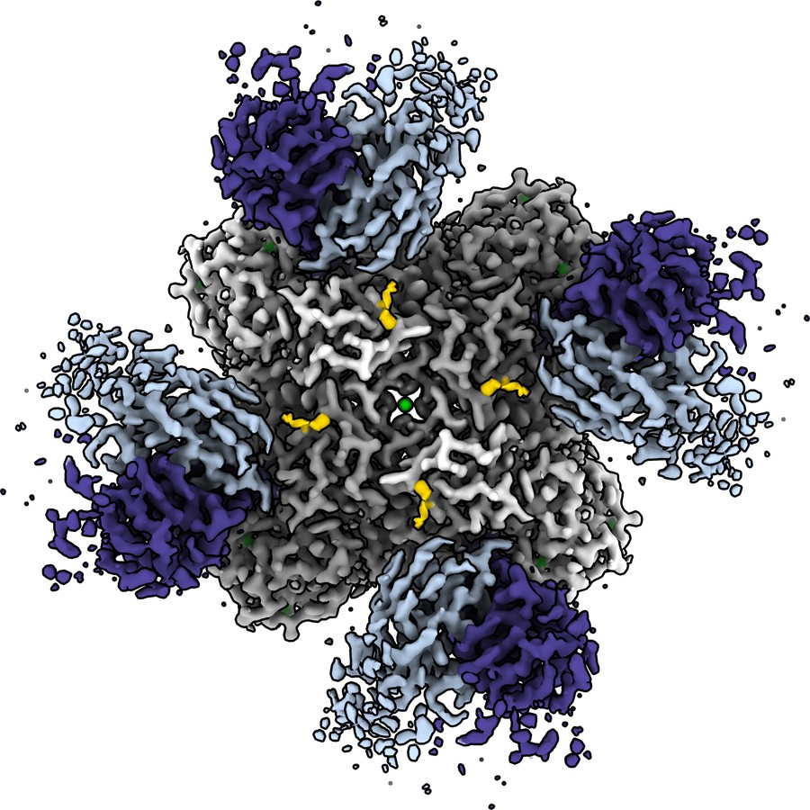
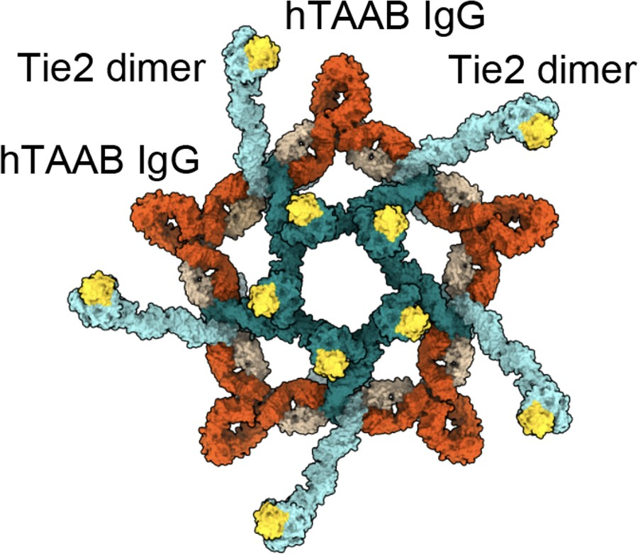

Structural Biology · Department of Life Science · Hanyang University
We use cryo-electron microscopy to understand how the human immune
system recognizes viral antigens: what gives broadly neutralizing antibodies their
breadth, and how prior exposure imprints the responses that follow.
We then use AI-based protein design to turn that understanding into
design rules for universal vaccines and therapeutic antibodies.
Publications

PNAS · 2026

Nature · 2026

Nat. Commun. · 2025

Nat. Commun. · 2021
Research
01
Single-particle cryo-EM of antibody–antigen complexes to define the epitopes and binding motifs that confer protection across viral strains.
02
Polyclonal epitope mapping (cryo-EMPEM) to read out entire serum repertoires and trace how early exposure shapes the antibodies we can still make.
03
AI-based protein design paired with structural validation, to build immunogens that focus the response on the epitopes that matter.
Approach
Protein design models can now propose immunogens faster than anyone can test them. That makes structural validation more valuable, not less — the interesting immunology sits exactly where a design meets a real, messy polyclonal response.
Our lab is built to close that loop: we design, we image what the immune system actually did with the design, and we feed that answer back into the next round.
News
The lab officially opens at the Department of Life Science, Hanyang University.
We are recruiting graduate students and undergraduate interns.
Get in touch →
We are a new lab, which means early members shape how it works. If you are excited about cryo-EM, antibody engineering, or computational protein design — and you like problems that do not have an answer key — please write to us.